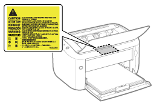

|
VAROITUS
|
|
Älä pura tai muuta tulostinta. Tulostimen sisällä on huomattavaa lämpöä tuottavia osia ja suurjänniteosia, jotka voivat aiheuttaa tulipalon tai sähköiskun.
Sähkölaitteet voivat olla vaarallisia, jos niitä käytetään väärin. Älä päästä lapsia koskemaan virtajohtoon, kaapeleihin, sisällä oleviin hammaspyöriin tai sähköosiin.
Jos tulostimesta kuuluu epätavallista ääntä tai jos siitä tulee savua, kuumuutta tai epätavallista hajua, kytke heti tulostimen virtakytkin POIS päältä ja irrota liitäntäkaapelit, jos ne ovat kytkettyinä. Irrota sitten virtapistoke pistorasiasta ja ota yhteys paikalliseen valtuutettuun Canon-myyjään. Käytön jatkamisesta voi seurata tulipalo tai sähköisku.
Älä käytä herkästi syttyviä suihkeita tulostimen lähettyvillä. Jos tulenarkoja aineita pääsee kosketuksiin tulostimen sisällä olevien sähköosien kanssa, seurauksena voi olla tulipalo tai sähköisku.
Kytke aina virtakytkin POIS päältä ja irrota virtapistoke sekä liitäntäkaapelit ennen tulostimen siirtämistä. Muuten johdot tai kaapelit voivat vaurioitua, mikä voi aiheuttaa tulipalon tai sähköiskun.
Vahvista, että virtajohto tai pistoke on työnnetty perille asti tulostimen siirtämisen jälkeen. Muuten seurauksena voi olla ylikuumeneminen ja tulipalo.
Älä pudota tulostimen sisään paperiliittimiä, niittejä tai muita metalliesineitä. Älä myöskään läikytä tulostimen sisään vettä, muita nesteitä tai syttyviä aineita (kuten alkoholia, bentseeniä tai maalinohennetta). Jos tällaiset esineet tai aineet joutuvat kosketuksiin tulostimen sisällä olevan suurjännitealueen kanssa, voi aiheutua tulipalo tai sähköisku. Jos näitä esineitä tai aineita putoaa tai kaatuu tulostimeen, käännä heti virtakytkin POIS päältä ja irrota liitäntäkaapelit, jos se on kytkettynä. Irrota sitten virtapistoke pistorasiasta ja ota yhteys paikalliseen valtuutettuun Canon-myyjään.
Kun kytket tai irrotat USB-kaapelin virtapistokkeen ollessa kytkettynä pistorasiaan, älä koske USB-liittimen metalliosaan, koska tämä voi aiheuttaa sähköiskun.
|
|
HUOMIO
|
|
Älä aseta raskaita esineitä tulostimen päälle. Esine tai tulostin voi pudota, mikä voi aiheuttaa henkilövahinkoja.
Paina tulostimen virtakytkin POIS-asentoon, kun tulostinta ei käytetä pitkään aikaan (esimerkiksi yön ajaksi). Käännä tulostimen virtakytkin POIS-asentoon ja irrota virtapistoke, jos tulostinta ei käytetä hyvin pitkään aikaan (esimerkiksi usean päivän ajaksi).
Avaa ja sulje kannet hellävaraisesti ja varovaisesti. Varo satuttamasta sormiasi.
Pidä kädet ja vaatteet poissa luovutusalueen telan ulottuvilta. Vaikka tulostin ei tulostakaan, tela voi yhtäkkiä alkaa pyöriä ja tarttua käsiin tai vaatteisiin aiheuttaen vammoja.
Luovutusaukko on kuuma tulostuksen aikana ja heti sen jälkeen. Älä kosketa luovutusaukon ympäristöä, sillä seurauksena voi olla palovammoja.
 Tulostettu paperi voi olla kuuma heti luovutuksen jälkeen. Ole varovainen poistaessasi paperia ja kohdistaessasi poistettua paperia etenkin jatkuvan tulostuksen jälkeen. Muuten seurauksena voi olla palovammoja.
Tulostimessa käytetty lasersäde voi olla keholle haitallinen. Lasersäde on eristetty laserskanneriyksikköön kannen sisälle, joten lasersäde ei pääse tulostimen ulkopuolelle missään tulostimen normaalissa käyttövaiheessa. Lue seuraavat turvallisuutta koskevat huomautukset ja ohjeet.
Älä koskaan avaa muita kansia kuin mitä tässä oppaassa neuvotaan.
Älä irrota laserskanneriyksikön kanteen kiinnitettyä varoitustarraa.
 Jos lasersäde pääsee tulostimen ulkopuolelle, sille altistuminen voi aiheuttaa vakavia silmävaurioita.
|